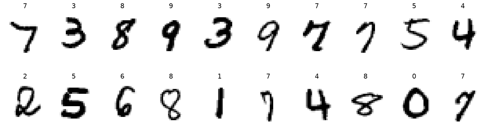
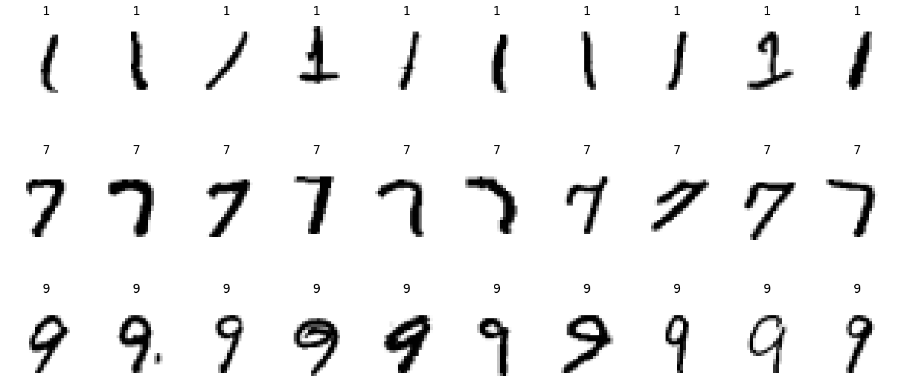
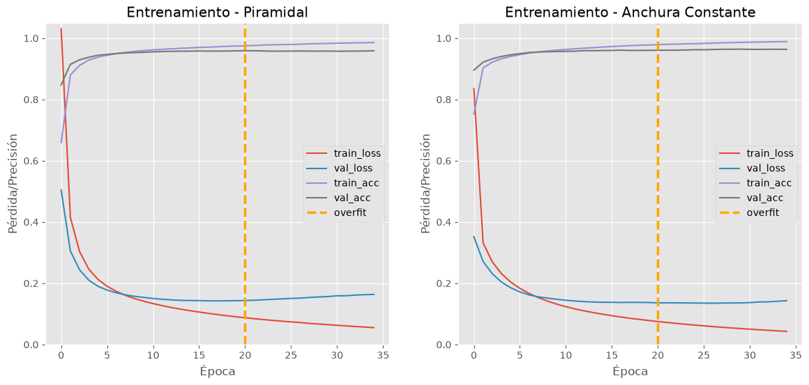
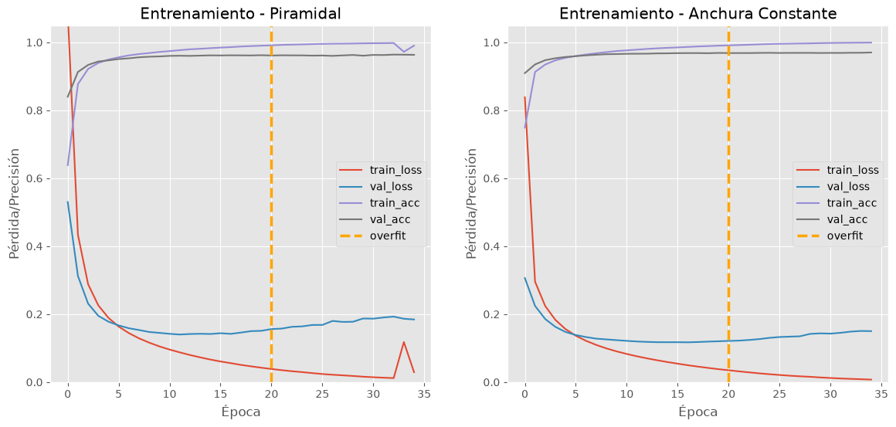
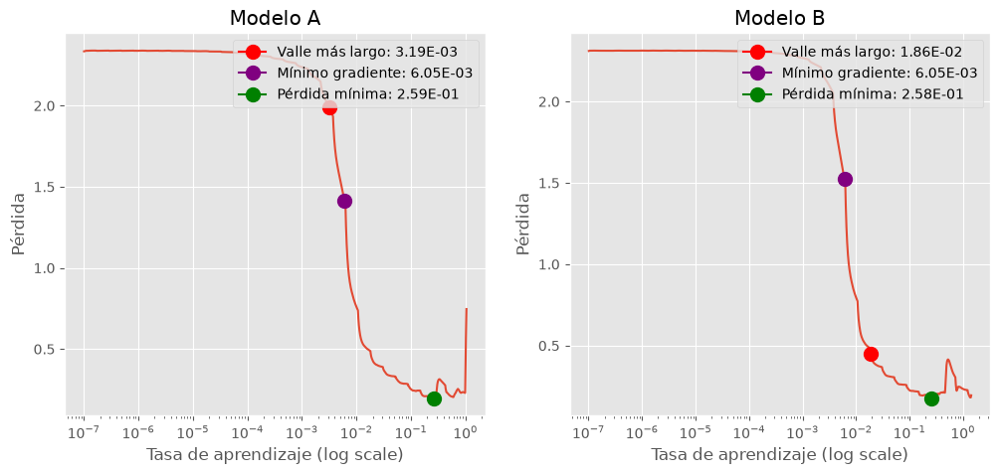
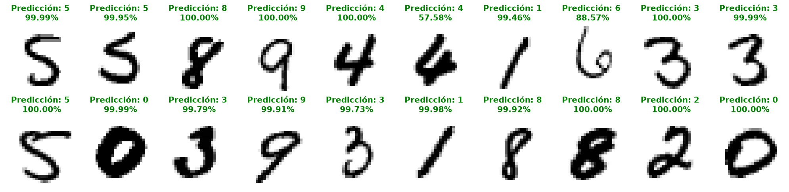
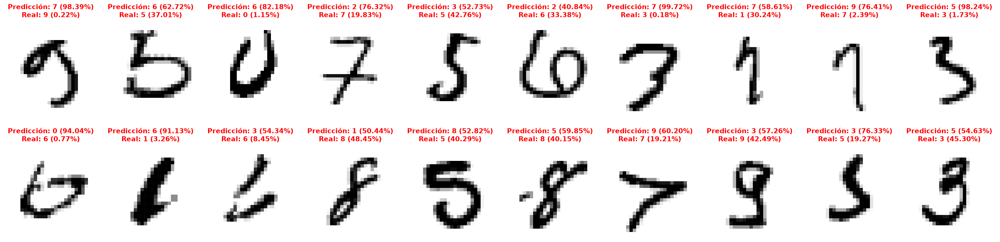
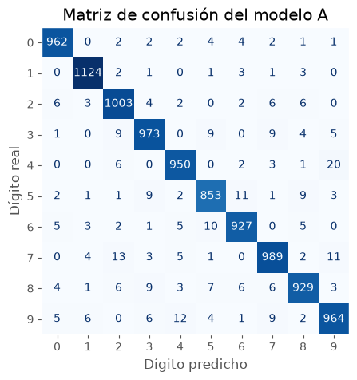

MIIA: Aprendizaje Profundo, PEC 1
1 Análisis exploratorio de los datos
Para el entrenamiento y la evaluación del perceptrón multicapa (MLP), se utilizará el conjunto de datos MNIST, disponible en Keras. Este conjunto, desarrollado originalmente por Yann LeCun y Corinna Cortes, contiene imágenes de números escritos a mano del 0 al 9, representadas en escala de grises con una resolución de 28x28 píxeles.
En la Tabla 1 se hace un breve resumen del conjunto de datos.
| Conjunto | Contenido | Muestras | Dimensiones | Tipo |
|---|---|---|---|---|
| Entrenamiento | Imágenes | 60000 | 60000 x 28 x 28 | uint8 |
| Prueba | Imágenes | 10000 | 10000 x 28 x 28 | uint8 |
| Entrenamiento | Etiquetas | 60000 | 60000 | uint8 |
| Prueba | Etiquetas | 10000 | 10000 | uint8 |
En la Figura 1, se muestran 20 imágenes aleatorias del conjunto de entrenamiento con el que vamos a trabajar.
Algunos números tienen trazos muy similares, Figura 2, se presupone que estos pueden ser los que generen más dificultad al modelo a la hora de clasificarlos.

Para preparar los datos para el entrenamiento, se normalizan las imágenes dividiendo por 255.0 y se realiza una división en conjunto de entrenamiento y validación.
# Se reserva el 20% de los datos de entrenamiento para validación
train_split = int(0.8 * x_train.shape[0])
x_train_split = x_train[:train_split].astype("float32") / 255.0
y_train_split = y_train[:train_split]
x_val_split = x_train[train_split:].astype("float32") / 255.0
y_val_split = y_train[train_split:]
x_test = x_test.astype("float32") / 255.02 Creación de los modelos
Para determinar el número de neuronas de las capas ocultas, se considerarán dos estrategias de diseño descritas en [1].
La primera, utilizada en los primeros diseños de redes neuronales, consiste en seleccionar el número de neuronas adoptando una arquitectura piramidal decreciente, en la que el número de neuronas se reduce progresivamente de una capa a la siguiente. Por ejemplo, una red neuronal de 3 capas ocultas podría diseñarse con 300, 200 y 100 neuronas, respectivamente.
Sin embargo, actualmente es habitual utilizar arquitecturas con un número constante de neuronas en todas las capas ocultas, ya que ofrece un rendimiento comparable, incluso mejor, en la mayoría de los problemas. Además, esta estrategia simplifica el ajuste de hiperparámetros, sólo necesitamos ajustar un único valor para el número de neuronas de las capas ocultas.
2.1 Modelo A (3 capas ocultas)
En la Tabla 2 se presentan las arquitecturas propuestas para entrenar el modelo A (3 capas ocultas).
- Arquitectura piramidal (Tabla 2 (a)): formada por tres capas ocultas de 32, 16 y 8 neuronas, respectivamente.
- Arquitectura de anchura constante (Tabla 2 (b)): formada por tres capas ocultas de 32 neuronas cada una.
2.1.1 Comparación de resultados
En la Figura 3 se observa la evolución de la pérdida y la precisión durante el entrenamiento de ambas arquitecturas.
Las curvas presentan un comportamiento muy parecido, durante las primeras épocas, tanto la pérdida de entrenamiento como la de validación disminuyen rápidamente y la precisión aumenta a valores altos.
Sin embargo, aproximadamente en la época 20 en ambos casos se observan indicios de overfitting en los dos modelos, mientras que la pérdida de entrenamiento continúa disminuyendo hasta aproximarse a cero, la pérdida de validación deja de mejorar.

La Tabla 3 presenta los resultados obtenidos al evaluar las dos arquitecturas en el conjunto de test. Los resultados muestran que los dos modelos mantienen una precisión muy similar cercana al 96%.
| Piramidal | Anchura Constante | |
|---|---|---|
| loss | 0.1575 | 0.1418 |
| accuracy | 0.9591 | 0.9637 |
2.2 Modelo B (4 capas ocultas)
En la Tabla 4 se presentan las arquitecturas propuestas para entrenar el modelo B (4 capas ocultas).
- Arquitectura piramidal (Tabla 4 (a)): formada por cuatro capas ocultas de 64, 32, 16 y 8 neuronas, respectivamente.
- Arquitectura de anchura constante (Tabla 4 (b)): formada por cuatro capas ocultas de 64 neuronas cada una.
2.2.1 Comparación de resultados
En la Figura 4 se observa la evolución de la pérdida y la precisión durante el entrenamiento de ambas arquitecturas.
Las curvas presentan un comportamiento muy parecido durante las primeras épocas, tanto la pérdida de entrenamiento como la de validación disminuyen rápidamente y la precisión aumenta a valores altos.
Sin embargo, aproximadamente a partir de la época 20 para ambas arquitecturas se aprecia overfitting, la pérdida en validación comienza a aumentar mientras que la de entrenamiento disminuye hasta aproximarse a cero.

La Tabla 5 presenta los resultados obtenidos al evaluar las dos arquitecturas en el conjunto de test. Los resultados muestran que los dos modelos mantienen una elevada capacidad de generalización.
| Piramidal | Anchura Constante | |
|---|---|---|
| loss | 0.1805 | 0.1335 |
| accuracy | 0.9613 | 0.9703 |
2.3 Conclusión
Las cuatro arquitecturas planteadas presentan un rendimiento similar, en la tarea de clasificar los dígitos manuscritos del conjunto MNIST, alcanzando precisiones comprendidas entre el 95,91% y el 97,03%.
En el modelo A, la arquitectura de anchura constante obtiene un precisión ligeramente superior a la piramidal (96,37% frente a 95,91%), aunque utiliza un 6,5% más de parámetros.
En el modelo B, la arquitectura de anchura constante también ofrece mejores resultados (97,03% frente 96,13%), utilizando aproximadamente un 19,4% más de parámetros que la arquitectura piramidal.
En consecuencia, para el siguiente desafío se seleccionan las arquitecturas de anchura constante para los dos modelos, con el objetivo de estudiar como influyen las técnicas de optimización y regularización sobre una red con más capacidad de representación.
Nota
Una red más densa, con mayor número de parámetros, dispone de más capacidad de representación, pero tiene un mayor riesgo de overfitting, requiere más espacio en disco para almacenarla y más recursos computacionales para entrenarla.
Para reducir este riesgo, se utilizan técnicas de regularización y estrategias como el early stopping, que permiten detener el entrenamiento cuando el rendimiento sobre los datos de validación deja de mejorar.
3 Ajuste de la tasa de aprendizaje
Para encontrar la tasa de aprendizaje adecuada, se implementa el callback LearningRateFinder, basado en la implementación que realiza la biblioteca fast.ai [2] del procedimiento Learning Rate Range Test, propuesto en Cyclical Learning Rates for Training Neural Networks [3].
El procedimiento consiste en ir aumentando la tasa de aprendizaje de forma exponencial en intervalo predefinido, registrando la pérdida durante el entrenamiento. Finalmente, se visualiza la evolución de la pérdida en función de la tasa de aprendizaje lo que permite identificar las regiones donde esta disminuye más rápidamente.
A partir de esta curva, se puede estimar una tasa de aprendizaje inicial utilizando diferentes criterios, como el punto de mayor pendiente negativa (Minimum Gradient), o la identificación de la región de descenso más prolongado (Valley) [2], [4].
Tras realizar la búsqueda de la tasa de aprendizaje para los modelos A y B, podemos observar las curvas de pérdida y las tasas de aprendizaje sugeridas en la Figura 5.
En la Figura 5, se visualiza la evolución de la pérdida en función de la tasa de aprendizaje para los modelos A y B. Sobre la curva se marcan las tasas de aprendizaje sugeridas según la literatura [4].

3.1 Conclusiones
Los resultados de validación de la Tabla 6 muestran que los tres criterios de selección de tasa de aprendizaje obtienen precisiones similares.
Para el modelo A, el criterio valley obtiene la mayor precisión, mientras que en el modelo B el mejor resultado corresponde a min_gradient. Estas diferencias son muy reducidas, lo que no nos permite establecer la superioridad de un criterio sobre los demás.
| Modelo A | Modelo B | |
|---|---|---|
| min_gradient | 96.17 | 96.78 |
| min_loss | 96.13 | 96.57 |
| valley | 96.8 | 96.68 |
Finalmente, la evaluación sobre el conjunto de prueba, presentada en la Tabla 7, muestran un precisión del 96,74% para el modeloA y del 96,92% para el modelo B.
Ambas arquitecturas presentan un rendimiento muy similar sobre datos no utilizados durante el entrenamiento, demostrando una buena capacidad de generalización.
Nota
En el modelo B, el resultado obtenido tras el ajuste de la tasa de aprendizaje no produce una mejora respecto al entrenamiento inicial donde se seleccionó unas tasa de aprendizaje estimada. La precisión pasa del 97,03% al 96,92%.
El resultado demuestra que los criterios para la selección utilizados por el Learning Rate Finder permiten encontrar tasas de aprendizaje candidatas, pero no garantizan una mejora en el rendimiento final del modelo. Por tanto, la principal ventaja de este método radica en que nos proporciona un método heurístico para realizar esta selección.
| Modelo A | Modelo B | |
|---|---|---|
| loss | 0.1142 | 0.1024 |
| accuracy | 96.74 | 96.92 |
4 Resultados
En este último punto se presentan los resultados finales. Se trabajará con el modelo A para facilitar la visualización de las representaciones aprendidas en las capas ocultas.
En la Figura 6 se muestran ejemplos de algunas predicciones correctas realizadas por el modelo. En la mayoría de los casos seleccionados, la probabilidad asignada a la clase predicha es elevada.

Mientras, en la Figura 7 se presentan ejemplos de predicciones incorrectas. Algunas de la imágenes presentadas contienen trazos ambiguos que hacen difícil su interpretación incluso para una persona. Algunas de las predicciones muestran que la probabilidad entre la clase errónea predicha y la real está bastante ajustada, sin embargo, otras predicciones muestran una confianza muy elevada en el error.

Inicialmente se planteo que los dígitos 1, 7 y 9 podrían presentar dificultades de clasificación debido a la similitud de sus trazos.
Finalmente en la Tabla 8, se observa que los dígitos 8 y 9 acumulan el mayor porcentaje de clasificaciones erróneas, seguidas de los dígitos 5, 7. Sin embargo, el 1 es el que menos errores presenta.
La matriz de confusión de la Figura 8, permite detectar las clases entre las que se producen más errores. Destaca principalmente la confusión entre los dígitos 4 y 9 con 20 imágenes del número 9 clasificadas como 4.
| Clase | Incorrectas | Totales | Porcentaje Incorrectas |
|---|---|---|---|
| 8 | 45 | 974 | 4.62 |
| 9 | 45 | 1009 | 4.46 |
| 5 | 39 | 892 | 4.37 |
| 7 | 39 | 1028 | 3.79 |
| 3 | 37 | 1010 | 3.66 |
| 4 | 32 | 982 | 3.26 |
| 6 | 31 | 958 | 3.24 |
| 2 | 29 | 1032 | 2.81 |
| 0 | 18 | 980 | 1.84 |
| 1 | 11 | 1135 | 0.97 |

En Figura 9 se representan los pesos aprendidos por las 32 neuronas de la primera capa oculta, reorganizados como una matriz de 28x28 píxeles para facilitar su interpretación visual.
Referencias
[1]
A. Géron, Hands-On Machine Learning with Scikit-Learn, Keras, and TensorFlow, 3.ª ed. O’Reilly Media, 2022. Disponible en: https://www.oreilly.com/library/view/hands-on-machine-learning/9781098125967/ch10.html
[2]
[3]
L. N. Smith, «Cyclical Learning Rates for Training Neural Networks», en 2017 IEEE Winter Conference on Applications of Computer Vision (WACV), IEEE, 2017, pp. 464-472. doi: 10.1109/WACV.2017.58.
[4]
A. Chang, «Automated Learning Rate Suggester». Accedido: 4 de noviembre de 2026. [En línea]. Disponible en: https://forums.fast.ai/t/automated-learning-rate-suggester/44199/30